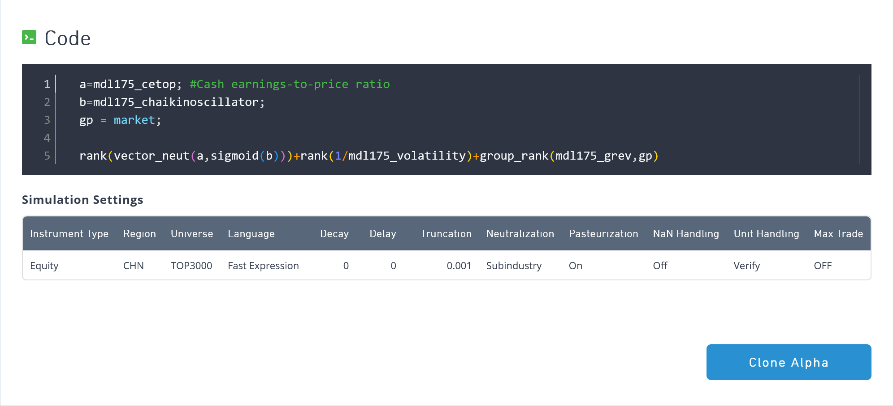
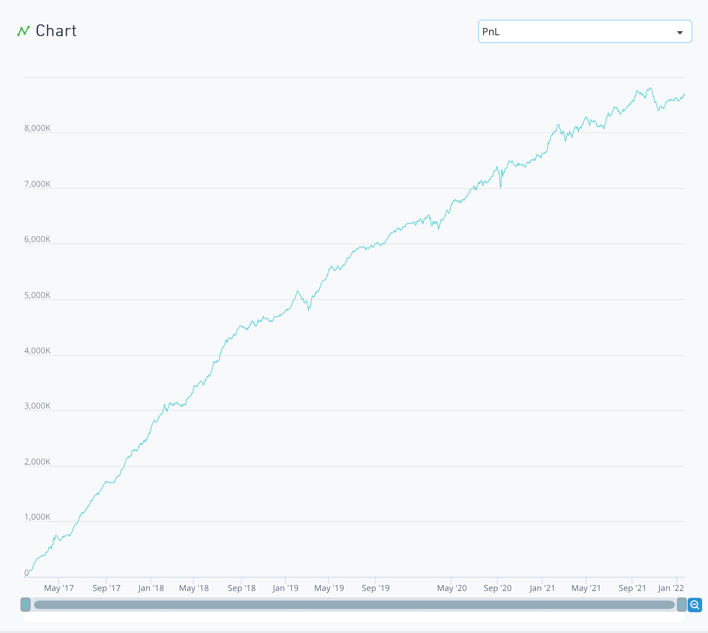
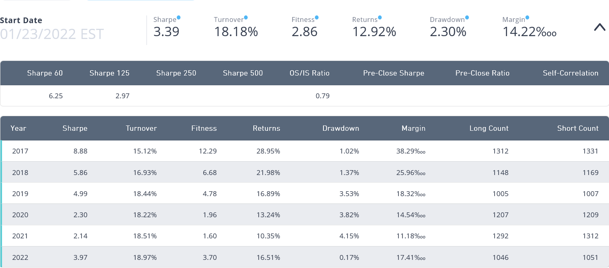
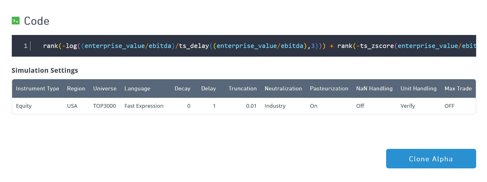
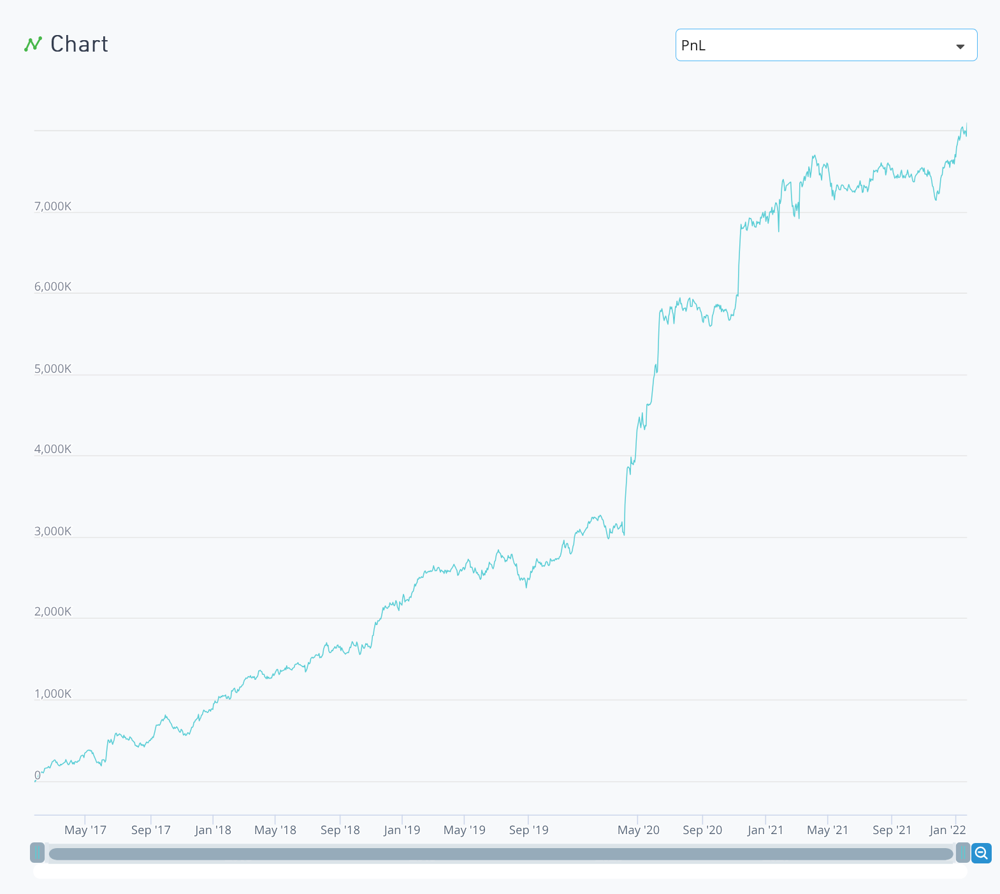
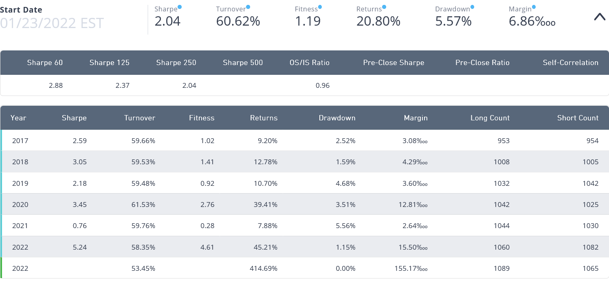

WorldQuant International Quantitative Championship 2024 (IQC)
CompetitionSignal ResearchCompetition Ranking: #11/1,649 (USA), #142/35,756 (Global) (top 0.40%)
During the summer of 2024, I was an active member of WorldQuant BRAIN, an online simulation platform operated by WorldQuant. The platform is designed for users to build and backtest trading signals.
I competed by developing and testing trading algorithms based on clean data. This allowed for rapid testing, and I was able to simulate over 2,500 different models in attempt to identify good signals.
Methodology
The development process required learning WorldQuant’s proprietary coding language, Fast Expression, to construct predictive models, or 'alphas'. I applied several statistical and mathematical techniques to build these models, including momentum strategies, mean reversion, statistical arbitrage, and sentiment analysis. The performance of each alpha was rigorously evaluated within the platform's simulated environment based on key metrics such as a high Sharpe ratio, low drawdown, and low turnover.
Examples
1
  This model combines a value factor (cash earnings-to-price) with a momentum factor (Chaikin Oscillator), a low-volatility component, and an anti-reversal signal. The calculation ranks the momentum-adjusted value signal, adds a component favoring low-volatility stocks, and subtracts a factor that bets against short-term price reversals. The model had great out-of-sample performance, with a high Sharpe Ratio of 3.39, a low maximum Drawdown of 2.30%, and an efficient Turnover rate of 18.18%.
2
  This model is a pure value-based strategy that uses the EV/EBITDA ratio as its sole input. The calculation combines two timing signals: first, a short-term momentum component that favors stocks whose EV/EBITDA multiple has recently decreased over the last 3 days, and second, a medium-term mean-reversion component that favors stocks whose EV/EBITDA is low compared to its 63-day average. The model was also neutralized against industry risk. It demonstrated strong out-of-sample performance with a Sharpe Ratio of 2.04 and an annualized return of 20.80%. However, the strategy has a relatively high Turnover of 60.62% and a maximum Drawdown of 5.57%.
Results
Throughout the summer, I participated in two challenges. In the 2024 International Quant Championship, I ran over 2,800 simulations and submitted 23 unique trading algorithms, achieving a final rank of #11 out of 1,649 participants in the United States. In the platform's ongoing General Challenge, by the end of summer 2024, I attained a rank of #10 out of 1,890 participants in the United States.